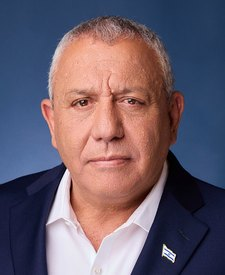

On the ballot
November 3
All 435 seats in the House and 35 in the Senate. See who is running where you live, and how each one scores on liberty.
The closest Senate races
The 9 Senate races that the Cook Political Report rated a toss-up or leaning one way on September 23, 2026. Tap a race to see the candidates side by side.
- A solid letter is a grade from recorded votes.
- An outlined letter is on the same scale, for a candidate with no votes. It comes from what they have said and done.
- A dash means nobody has researched that candidate yet.
- Iowa SenateToss-upOpen seat
 Ashley HinsonR · in the House todayA
Ashley HinsonR · in the House todayA Josh TurekD · no votes in Congress to count. Graded on words and actionsFand 1 more on the ballot
Josh TurekD · no votes in Congress to count. Graded on words and actionsFand 1 more on the ballot - Maine SenateToss-up
 Susan CollinsR · holds the seatA-
Susan CollinsR · holds the seatA- Troy JacksonD · no votes in Congress to count. Graded on words and actionsF
Troy JacksonD · no votes in Congress to count. Graded on words and actionsF - Michigan SenateToss-upOpen seat
 Mike RogersR · no votes in Congress to count. Graded on words and actionsA
Mike RogersR · no votes in Congress to count. Graded on words and actionsA Abdul El-SayedD · no votes in Congress to count. Graded on words and actionsFand 4 more on the ballot
Abdul El-SayedD · no votes in Congress to count. Graded on words and actionsFand 4 more on the ballot - New Hampshire SenateToss-upOpen seat
 Chris PappasD · in the House todayF
Chris PappasD · in the House todayF John E. SununuR · no votes in Congress to count. Graded on words and actionsA-and 1 more on the ballot
John E. SununuR · no votes in Congress to count. Graded on words and actionsA-and 1 more on the ballot - Texas SenateToss-upOpen seat
 Ken PaxtonR · no votes in Congress to count. Graded on words and actionsC
Ken PaxtonR · no votes in Congress to count. Graded on words and actionsC James TalaricoD · no votes in Congress to count. Graded on words and actionsFand 1 more on the ballot
James TalaricoD · no votes in Congress to count. Graded on words and actionsFand 1 more on the ballot - Kansas SenateLeans R
 Roger MarshallR · holds the seatA-
Roger MarshallR · holds the seatA- Adam HamiltonD · no votes in Congress to count. Graded on words and actionsFand 1 more on the ballot
Adam HamiltonD · no votes in Congress to count. Graded on words and actionsFand 1 more on the ballot - North Carolina SenateLeans DOpen seat
 Roy CooperD · no votes in Congress to count. Graded on words and actionsD
Roy CooperD · no votes in Congress to count. Graded on words and actionsD Michael WhatleyR · no votes in Congress to count. Graded on words and actionsBand 2 more on the ballot
Michael WhatleyR · no votes in Congress to count. Graded on words and actionsBand 2 more on the ballot - Alaska SenateToss-up
 Dan S. SullivanR · holds the seatAGerald HeikesR · no votes in Congress, and not researched yet–
Dan S. SullivanR · holds the seatAGerald HeikesR · no votes in Congress, and not researched yet– Mary PeltolaD · former representativeC-Dan J. SullivanR · no votes in Congress, and not researched yet–
Mary PeltolaD · former representativeC-Dan J. SullivanR · no votes in Congress, and not researched yet– - Ohio Senate (special election)Toss-up
 Jon HustedR · holds the seatA
Jon HustedR · holds the seatA Sherrod BrownD · former senatorFand 2 more on the ballot
Sherrod BrownD · former senatorFand 2 more on the ballot
Every Senate race
35 seats, each with the candidates of the two big parties.
- A solid letter is a grade from recorded votes.
- An outlined letter is on the same scale, for a candidate with no votes. It comes from what they have said and done.
- A dash means nobody has researched that candidate yet.
- Alabama SenateOpen seat
 Barry MooreR · in the House todayB+Everett WessD · no votes in Congress, and not researched yet–
Barry MooreR · in the House todayB+Everett WessD · no votes in Congress, and not researched yet– - Alaska SenateToss-upDan S. SullivanR · holds the seatAGerald HeikesR · no votes in Congress, and not researched yet–Mary PeltolaD · former representativeC-Dan J. SullivanR · no votes in Congress, and not researched yet–
- Arkansas Senate
 Tom CottonR · holds the seatAHallie ShoffnerD · no votes in Congress, and not researched yet–and 1 more on the ballot
Tom CottonR · holds the seatAHallie ShoffnerD · no votes in Congress, and not researched yet–and 1 more on the ballot - Colorado Senate
 John HickenlooperD · holds the seatFMark BaisleyR · no votes in Congress, and not researched yet–and 4 more on the ballot
John HickenlooperD · holds the seatFMark BaisleyR · no votes in Congress, and not researched yet–and 4 more on the ballot - Delaware Senate
 Chris CoonsD · holds the seatFMichael KatzR · no votes in Congress, and not researched yet–
Chris CoonsD · holds the seatFMichael KatzR · no votes in Congress, and not researched yet– - Florida Senate (special election)
 Ashley MoodyR · holds the seatAAngie NixonD · no votes in Congress, and not researched yet–and 1 more on the ballot
Ashley MoodyR · holds the seatAAngie NixonD · no votes in Congress, and not researched yet–and 1 more on the ballot - Georgia Senate
 Jon OssoffD · holds the seatF
Jon OssoffD · holds the seatF Mike CollinsR · in the House todayB+
Mike CollinsR · in the House todayB+ - Idaho Senate
 Jim RischR · holds the seatATodd AchillesIndependent · no votes in Congress, and not researched yet–Natalie FlemingIndependent · no votes in Congress, and not researched yet–Matt LoesbyLibertarian · no votes in Congress, and not researched yet–
Jim RischR · holds the seatATodd AchillesIndependent · no votes in Congress, and not researched yet–Natalie FlemingIndependent · no votes in Congress, and not researched yet–Matt LoesbyLibertarian · no votes in Congress, and not researched yet– - Illinois SenateOpen seat
 Juliana StrattonD · no votes in Congress, and not researched yet–Don TracyR · no votes in Congress, and not researched yet–and 1 more on the ballot
Juliana StrattonD · no votes in Congress, and not researched yet–Don TracyR · no votes in Congress, and not researched yet–and 1 more on the ballot - Iowa SenateToss-upOpen seatAshley HinsonR · in the House todayAJosh TurekD · no votes in Congress to count. Graded on words and actionsFand 1 more on the ballot
- Kansas SenateLeans RRoger MarshallR · holds the seatA-Adam HamiltonD · no votes in Congress to count. Graded on words and actionsFand 1 more on the ballot
- Kentucky SenateOpen seat
 Andy BarrR · in the House todayACharles BookerD · no votes in Congress, and not researched yet–and 1 more on the ballot
Andy BarrR · in the House todayACharles BookerD · no votes in Congress, and not researched yet–and 1 more on the ballot - Louisiana SenateOpen seatJamie DavisD · no votes in Congress, and not researched yet–
 Julia LetlowR · in the House todayA
Julia LetlowR · in the House todayA - Maine SenateToss-upSusan CollinsR · holds the seatA-Troy JacksonD · no votes in Congress to count. Graded on words and actionsF
- Massachusetts Senate
 Ed MarkeyD · holds the seatFJohn DeatonR · no votes in Congress, and not researched yet–and 2 more on the ballot
Ed MarkeyD · holds the seatFJohn DeatonR · no votes in Congress, and not researched yet–and 2 more on the ballot - Michigan SenateToss-upOpen seatMike RogersR · no votes in Congress to count. Graded on words and actionsAAbdul El-SayedD · no votes in Congress to count. Graded on words and actionsFand 4 more on the ballot
- Minnesota SenateOpen seatPeggy FlanaganD · no votes in Congress, and not researched yet–Michele TafoyaR · no votes in Congress, and not researched yet–and 2 more on the ballot
- Mississippi Senate
 Cindy Hyde-SmithR · holds the seatAScott ColomD · no votes in Congress, and not researched yet–and 1 more on the ballot
Cindy Hyde-SmithR · holds the seatAScott ColomD · no votes in Congress, and not researched yet–and 1 more on the ballot - Montana SenateOpen seatKurt AlmeR · no votes in Congress, and not researched yet–Alani BankheadD · no votes in Congress, and not researched yet–and 2 more on the ballot
- Nebraska Senate
 Pete RickettsR · holds the seatAChuck ConboyAmerica First · no votes in Congress, and not researched yet–Mike MarvinLegal Marijuana Now · no votes in Congress, and not researched yet–Dan OsbornIndependent · no votes in Congress, and not researched yet–and 1 more on the ballot
Pete RickettsR · holds the seatAChuck ConboyAmerica First · no votes in Congress, and not researched yet–Mike MarvinLegal Marijuana Now · no votes in Congress, and not researched yet–Dan OsbornIndependent · no votes in Congress, and not researched yet–and 1 more on the ballot - New Hampshire SenateToss-upOpen seatChris PappasD · in the House todayFJohn E. SununuR · no votes in Congress to count. Graded on words and actionsA-and 1 more on the ballot
- New Jersey Senate
 Cory BookerD · holds the seatFJustin MurphyR · no votes in Congress, and not researched yet–and 2 more on the ballot
Cory BookerD · holds the seatFJustin MurphyR · no votes in Congress, and not researched yet–and 2 more on the ballot - New Mexico Senate
 Ben Ray LujánD · holds the seatFLarry MarkerR · no votes in Congress, and not researched yet–
Ben Ray LujánD · holds the seatFLarry MarkerR · no votes in Congress, and not researched yet– - North Carolina SenateLeans DOpen seatRoy CooperD · no votes in Congress to count. Graded on words and actionsDMichael WhatleyR · no votes in Congress to count. Graded on words and actionsBand 2 more on the ballot
- Ohio Senate (special election)Toss-upJon HustedR · holds the seatASherrod BrownD · former senatorFand 2 more on the ballot
- Oklahoma SenateOpen seat
 Kevin HernR · in the House todayB+N'Kiyla Jasmine ThomasD · no votes in Congress, and not researched yet–and 3 more on the ballot
Kevin HernR · in the House todayB+N'Kiyla Jasmine ThomasD · no votes in Congress, and not researched yet–and 3 more on the ballot - Oregon Senate
 Jeff MerkleyD · holds the seatFDavid Brock SmithR · no votes in Congress, and not researched yet–and 2 more on the ballot
Jeff MerkleyD · holds the seatFDavid Brock SmithR · no votes in Congress, and not researched yet–and 2 more on the ballot - Rhode Island Senate
 Jack ReedD · holds the seatFRaymond McKayR · no votes in Congress, and not researched yet–and 1 more on the ballot
Jack ReedD · holds the seatFRaymond McKayR · no votes in Congress, and not researched yet–and 1 more on the ballot - South Carolina Senate
 Darline GrahamR · holds the seat–Annie AndrewsD · no votes in Congress, and not researched yet–and 2 more on the ballot
Darline GrahamR · holds the seat–Annie AndrewsD · no votes in Congress, and not researched yet–and 2 more on the ballot - South Dakota Senate
 Mike RoundsR · holds the seatABrian BengsIndependent · no votes in Congress, and not researched yet–
Mike RoundsR · holds the seatABrian BengsIndependent · no votes in Congress, and not researched yet– - Tennessee Senate
 Bill HagertyR · holds the seatA-Marquita BradshawD · no votes in Congress, and not researched yet–and 8 more on the ballot
Bill HagertyR · holds the seatA-Marquita BradshawD · no votes in Congress, and not researched yet–and 8 more on the ballot - Texas SenateToss-upOpen seatKen PaxtonR · no votes in Congress to count. Graded on words and actionsCJames TalaricoD · no votes in Congress to count. Graded on words and actionsFand 1 more on the ballot
- Virginia Senate
 Mark WarnerD · holds the seatFBert MizusawaR · no votes in Congress, and not researched yet–
Mark WarnerD · holds the seatFBert MizusawaR · no votes in Congress, and not researched yet– - West Virginia Senate
 Shelley Moore CapitoR · holds the seatARachel Fetty AndersonD · no votes in Congress, and not researched yet–and 1 more on the ballot
Shelley Moore CapitoR · holds the seatARachel Fetty AndersonD · no votes in Congress, and not researched yet–and 1 more on the ballot - Wyoming SenateOpen seat
 James W. ByrdD · no votes in Congress, and not researched yet–
James W. ByrdD · no votes in Congress, and not researched yet– Harriet HagemanR · in the House todayB
Harriet HagemanR · in the House todayB
Every House race, by state
Every one of the 435 House seats is on the ballot. Pick a state to see each district.
- Alabama1 Senate race and 7 House races
- Alaska1 Senate race and 1 House race
- Arizona9 House races
- Arkansas1 Senate race and 4 House races
- California52 House races
- Colorado1 Senate race and 8 House races
- Connecticut5 House races
- Delaware1 Senate race and 1 House race
- Florida1 Senate race and 28 House races
- Georgia1 Senate race and 14 House races
- Hawaii2 House races
- Idaho1 Senate race and 2 House races
- Illinois1 Senate race and 17 House races
- Indiana9 House races
- Iowa1 Senate race and 4 House races
- Kansas1 Senate race and 4 House races
- Kentucky1 Senate race and 6 House races
- Louisiana1 Senate race and 6 House races
- Maine1 Senate race and 2 House races
- Maryland8 House races
- Massachusetts1 Senate race and 9 House races
- Michigan1 Senate race and 13 House races
- Minnesota1 Senate race and 8 House races
- Mississippi1 Senate race and 4 House races
- Missouri8 House races
- Montana1 Senate race and 2 House races
- Nebraska1 Senate race and 3 House races
- Nevada4 House races
- New Hampshire1 Senate race and 2 House races
- New Jersey1 Senate race and 12 House races
- New Mexico1 Senate race and 3 House races
- New York26 House races
- North Carolina1 Senate race and 14 House races
- North Dakota1 House race
- Ohio1 Senate race and 15 House races
- Oklahoma1 Senate race and 5 House races
- Oregon1 Senate race and 6 House races
- Pennsylvania17 House races
- Rhode Island1 Senate race and 2 House races
- South Carolina1 Senate race and 7 House races
- South Dakota1 Senate race and 1 House race
- Tennessee1 Senate race and 9 House races
- Texas1 Senate race and 38 House races
- Utah4 House races
- Vermont1 House race
- Virginia1 Senate race and 11 House races
- Washington10 House races
- West Virginia1 Senate race and 2 House races
- Wisconsin8 House races
- Wyoming1 Senate race and 1 House race
Elections in other countries
Four more countries with a vote coming, and where the people running stand on liberty. An outlined letter is a grade from what a politician has said and done.
- BrazilPresident, second round · October 25, 2026
 Flávio BolsonaroLiberal PartyC+
Flávio BolsonaroLiberal PartyC+ Luiz Inácio Lula da SilvaWorkers' PartyF
Luiz Inácio Lula da SilvaWorkers' PartyF - IsraelKnesset (parliament), 26th · October 27, 2026

Gadi EisenkotYashar! (Straight)ABenjamin NetanyahuLikudD Naftali BennettTogetherC+Yair GolanThe DemocratsFand 6 more on the page
Naftali BennettTogetherC+Yair GolanThe DemocratsFand 6 more on the page - SpainGeneral election (Congress of Deputies and Senate) · November 29, 2026Alberto Núñez FeijóoPeople's PartyB-Pedro SánchezSpanish Socialist Workers' PartyFSantiago AbascalVoxB-
- FrancePresident, first round · April 18, 2027Marine Le PenNational RallyBÉdouard PhilippeHorizonsB+
 Jean-Luc MélenchonFrance UnbowedFRaphaël GlucksmannPlace publiqueFand 2 more on the page
Jean-Luc MélenchonFrance UnbowedFRaphaël GlucksmannPlace publiqueFand 2 more on the page
Which race are you watching?
Say it where other readers can answer you. Opinions, videos and corrections about the November races are all in one place.
Discussion
November 3: every race
The race you're following, and what everyone else is missing about it. What readers post is their words, not mine. My answers carry the Host tag.
Leave out anything private about anyone. The rules, what your account keeps, and what readers have changed so far
Not sure who to vote for?
Bring the race to a call. The community meets every day with the hosts and the panel.